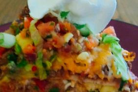

Description
Craving something from Taco Bell? Forget about fast food and make thisMexican pizza at home using a recipe that is as close to the original
as possible.
Ingredients
Pizza Dough
-
½ pound ground beef
-
1 medium onion, diced
-
1 clove garlic, minced
-
1 tablespoon chili powder
-
1 teaspoon ground cumin
-
½ teaspoon paprika
-
½ teaspoon salt
-
½ teaspoon black pepper
-
1 can (450 g) refried beans
-
4 (25 cm) wheat tortillas
-
½ cup salsa
-
1 cup shredded cheddar cheese
-
1 cup shredded Monterey Jack cheese
-
2 green onions, chopped
-
2 tomatoes, diced
-
¼ cup thinly sliced jalapeño pepper
-
¼ cup sour cream (optional)
Steps
Step 1
Preheat the oven to 175 degrees Celsius (350 degrees Fahrenheit).
Grease 2 pie pans with non-stick spray.
Step 2
Place the ground beef, onion, and garlic in a skillet over
medium heat. Cook until the beef is browned and crumbly,
5–7 minutes. Drain the fat. Season with chili powder, cumin,
paprika, salt, and pepper.
Step 3
Place one tortilla in each pie pan and spread with a layer of
refried beans. Divide half of the seasoned beef between the
tortillas, then top with another tortilla.
Bake in the preheated oven until crispy, about 10 minutes.
Step 4
Remove the pizzas from the oven and let them cool slightly.
Spread half of the salsa over each top tortilla.
Top each pizza with half of the cheddar and Monterey Jack cheese.
Add half of the tomatoes, green onions, and jalapeños.
Step 5
Return the pizzas to the oven and bake until the cheese is melted,
about 5–10 more minutes. Let cool slightly before slicing each
pizza into 4 pieces.